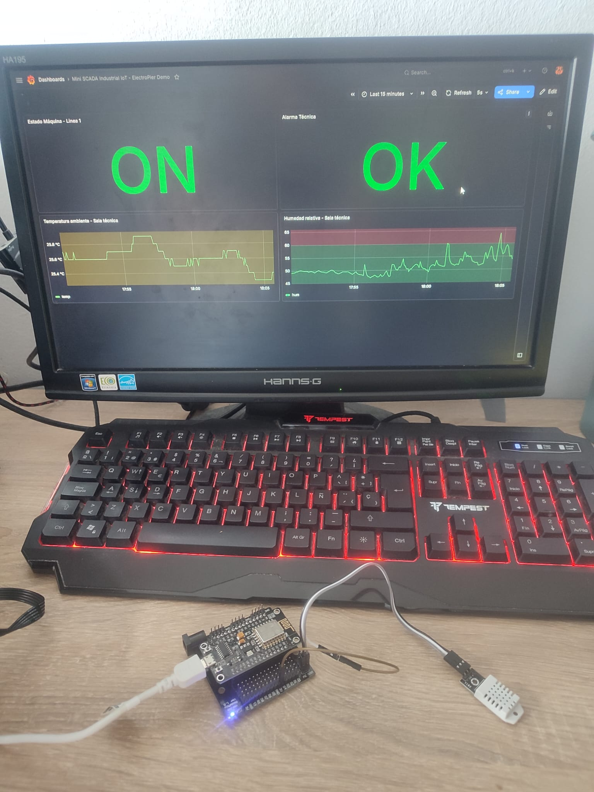
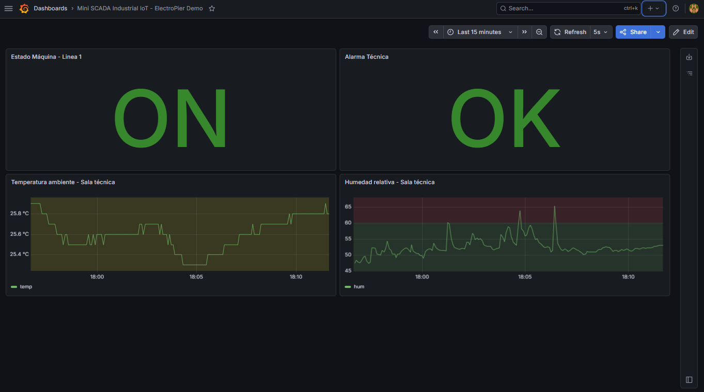
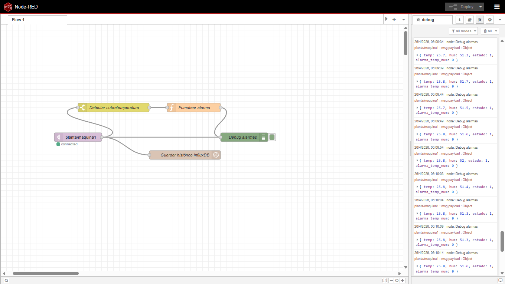
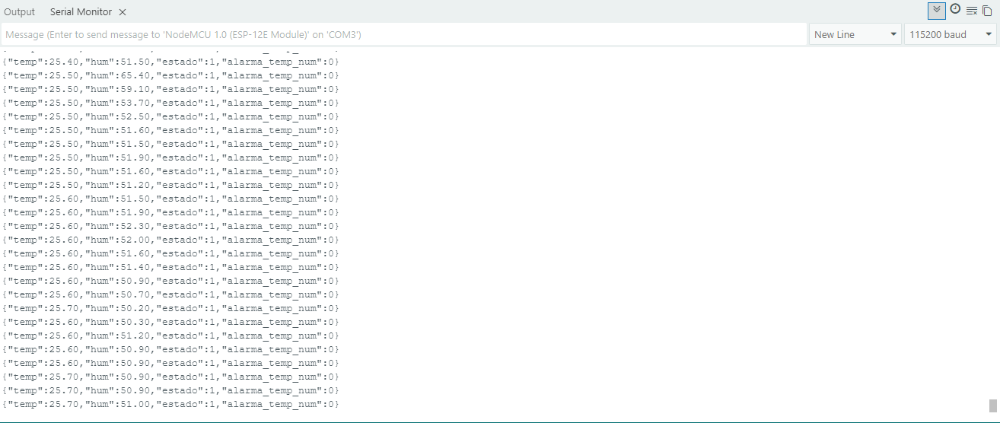

Proyecto IIoT / SCADA / Datos industriales
Mini SCADA Industrial IoT
Sistema funcional de monitorización industrial con sensor físico DHT22, ESP8266, comunicación MQTT, procesamiento en Node-RED, histórico en InfluxDB y dashboard en Grafana.
ESP8266DHT22WiFiMQTT Node-REDInfluxDBGrafana
Resumen del proyecto
Este proyecto empezó como una simulación virtual y evolucionó hasta convertirse en una arquitectura IIoT real. El sistema mide temperatura y humedad con un sensor físico, envía los datos por MQTT, los procesa con Node-RED, los almacena como series temporales y los muestra en un dashboard industrial.
Problema industrial
En una planta industrial es importante monitorizar variables ambientales o de proceso, detectar condiciones anómalas y disponer de históricos para mantenimiento, trazabilidad y toma de decisiones.
Esta solución replica a pequeña escala una plataforma de supervisión para salas técnicas, cuadros eléctricos, almacenes, laboratorios o pequeñas líneas de producción.
Arquitectura del sistema
DHT22 → ESP8266 → WiFi → Mosquitto MQTT → Node-RED → InfluxDB → Grafana
La arquitectura es modular: el sensor físico puede sustituirse o ampliarse con nuevos dispositivos sin cambiar la capa de visualización ni la base de datos.
Variables monitorizadas
Temperatura
Lectura real del DHT22 y alarma visual por sobretemperatura.
Humedad relativa
Seguimiento ambiental en tiempo real e histórico.
Estado de máquina
Indicador ON/OFF para representar disponibilidad del activo.
Alarma técnica
Mapeo visual OK/ALARMA en Grafana según umbral configurado.
Funciones implementadas
- Lectura física de temperatura y humedad con DHT22.
- Publicación de telemetría desde ESP8266 mediante MQTT.
- Recepción, depuración y encaminamiento de datos en Node-RED.
- Almacenamiento histórico en InfluxDB.
- Dashboard SCADA en Grafana con actualización automática.
- Alarma visual por sobretemperatura.
- Arranque automático local de servicios para trabajar como mini servidor SCADA.
Demo del sistema real
Dashboard en tiempo real alimentado por un sensor físico DHT22 conectado a un ESP8266 mediante MQTT.
Galería del proyecto real




Fase previa: simulación virtual
Antes de integrar el sensor físico, se validó la arquitectura completa con datos simulados en Node-RED.


Resultados obtenidos
- Proyecto IIoT real conectado de extremo a extremo.
- Datos físicos visualizados en tiempo real.
- Histórico de variables para análisis posterior.
- Dashboard industrial presentable para portfolio técnico.
- Base preparada para añadir más sensores, máquinas, KPIs OEE o alertas externas.
Próximas mejoras
- Añadir control de actuador con relé o ventilador.
- Crear alarma por pérdida de comunicación del ESP8266.
- Incorporar notificaciones por Telegram o email.
- Añadir múltiples nodos sensores para simular una planta con varias zonas.